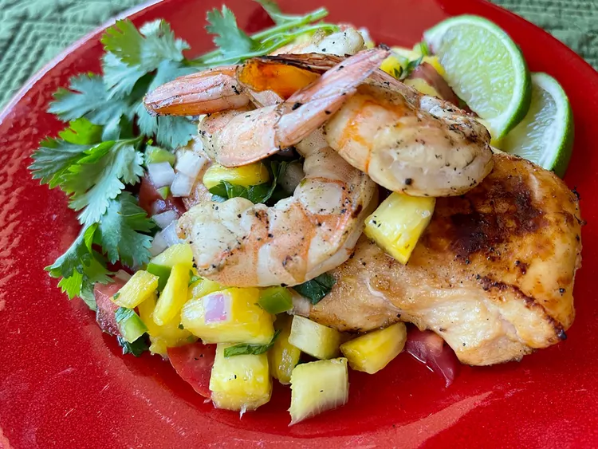

Key West Chicken & Shrimp

Description
This copycat Cheddar's Key West chicken and shrimp dish, with a delicious homemade pineapple pico de gallo,
is
packed with flavor and color. Chicken and shrimp are marinated briefly in a zingy jalapeño-lime marinade,
grilled, and then topped with pineapple pico de gallo. Served with rice or cauliflower rice, and a green
vegetable or tossed salad, this makes a stunning meal.
Ingredients
Pinepapple Pico de Gallo:
- 3/4 cup diced fresh pineapple
- 1/4 cup diced red onion
- 1/4 cup minced jalapeno pepper
- 1/4 cup diced tomato
- 3 tablespoons minced fresh cilantro
- 2 tablespoons fresh lime juice
- 1 pinch salt
Key West Chicken & Shrimp:
- 1/2 cup orange juice
- 1/2 cup minced jalapeno pepper
- 1/4 cup white vinegar
- 1 lime, zested and juiced
- 2 tablespoons avocado oil
- 2 tablespoons honey
- 2 tablespoons soy sauce
- 1 tablespoons granulated garlic
- 1/4 teaspoon salt and freshly ground black pepper, or to taste
- 4 boneless skinless chiken breasts
- 1 pound medium shrimp, peeled and deveined
- lime wedges (optional)
- fresh cilantro sprigs (optional)
Steps
- Combine pineapple, red onion, 1/4 cup minced jalapeño, tomato, 3 tablespoons cilantro, 2 tablespoons lime
juice, and 1 pinch salt in a non-reactive bowl, and toss to mix well. Refrigerate until ready to use.
- In a bowl with a cover, stir together orange juice, 1/2 cup minced jalapeño, white wine vinegar, zest and
juice of 1 lime, avocado oil, honey, soy sauce, granulated garlic, salt, and black pepper.
- Pound chicken to a uniform thickness and place in an 11x7-inch baking dish. Pour half the marinade over
chicken, cover, and refrigerate for 1 hour, turning about halfway through.
- Cover and refrigerate remaining marinade until ready to use.
- After chicken has marinated 45 minutes, place shrimp into the bowl with remaining marinade, and toss to coat
shrimp well. Cover and refrigerate for 15 minutes.
- Remove shrimp from marinade but do not dry. Place shrimp on metal skewers and refrigerate until ready to
use. Discard marinade.
- Preheat an outdoor grill for medium heat. Clean and oil the grates, using tongs and an oil-saturated paper
towel.
- Remove chicken from marinade, but do not dry. Discard marinade.
- Grill chicken until meat is no longer pink and juices run clear, 4 to 5 minutes per side, depending on
thickness. An instant-read thermometer, inserted into the thickest part of chicken, should read at least 165
degrees F (74 degrees C). Remove to a plate and keep warm under a foil tent.
- Grill shrimp skewers until shrimp is opaque and has some color from the grill, 1 to 2 minutes per side.
- Serve each chicken breast with pineapple pico de gallo. Top with grilled shrimp; garnish with lime slices and cilantro.